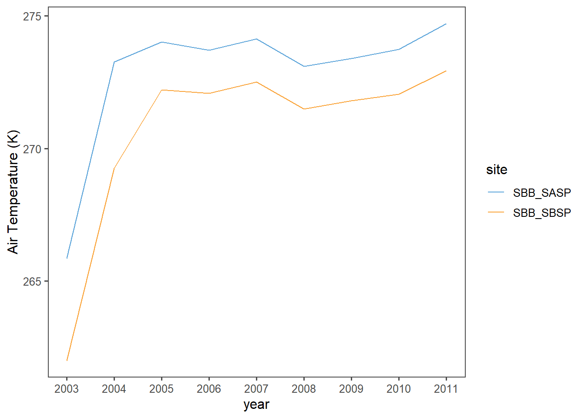
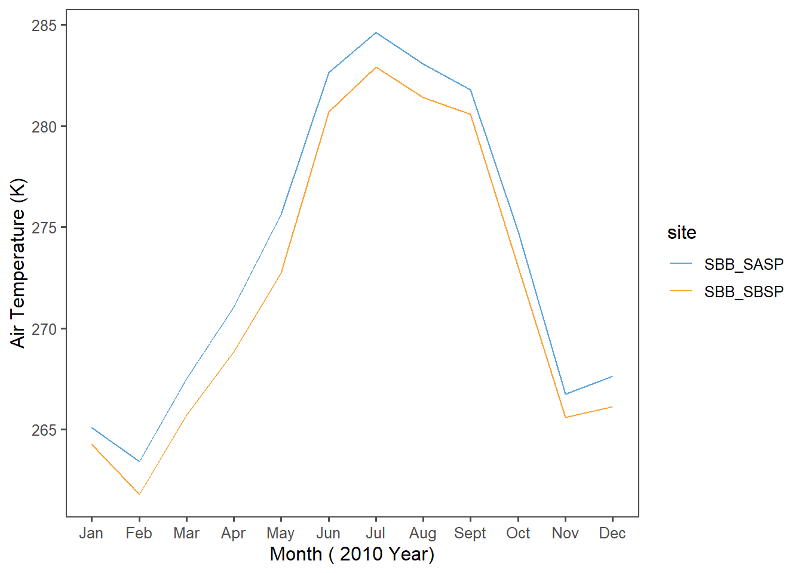
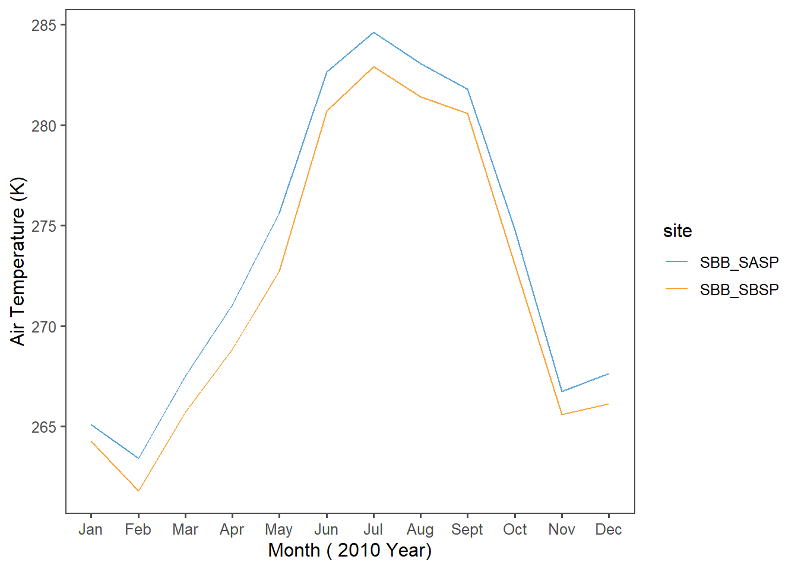
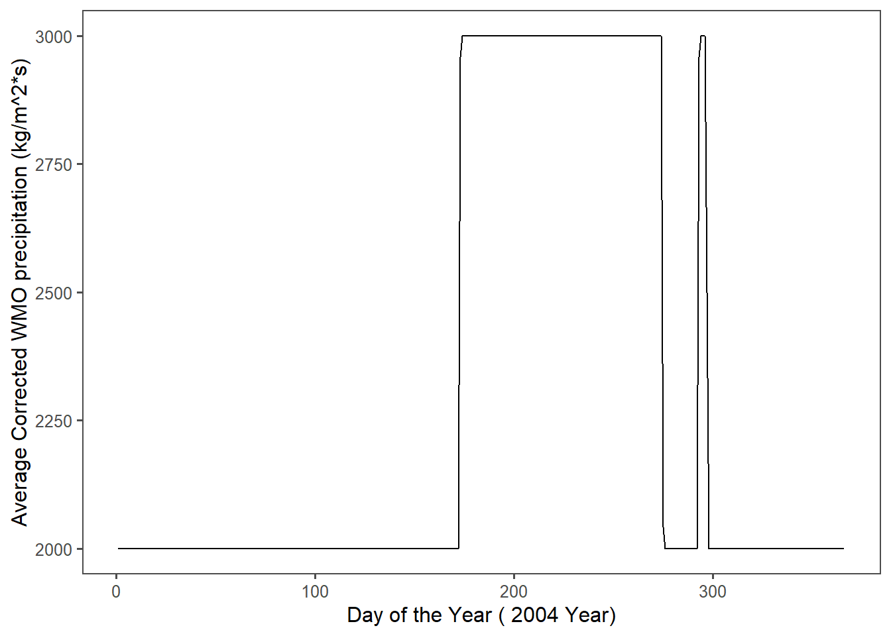
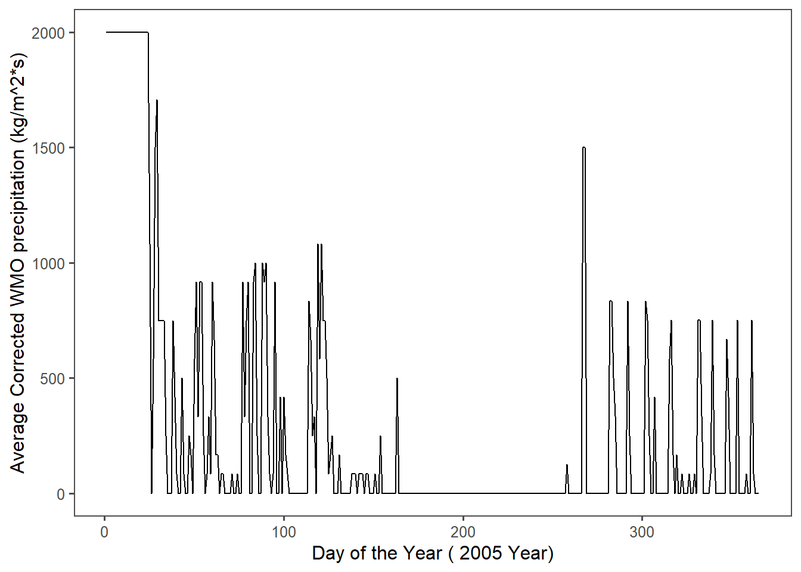
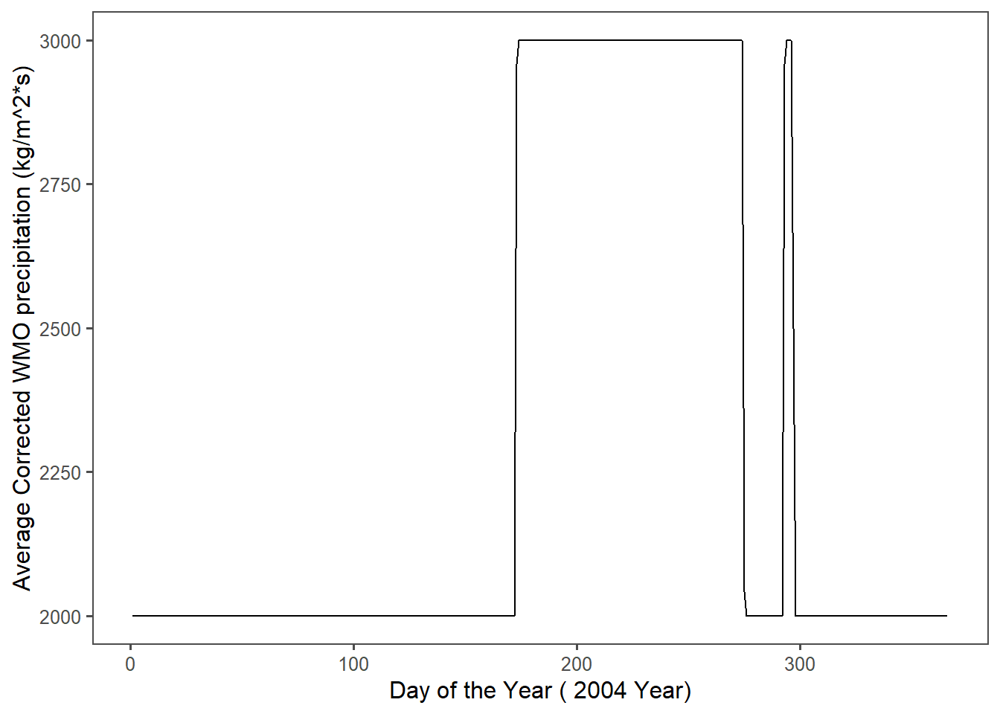
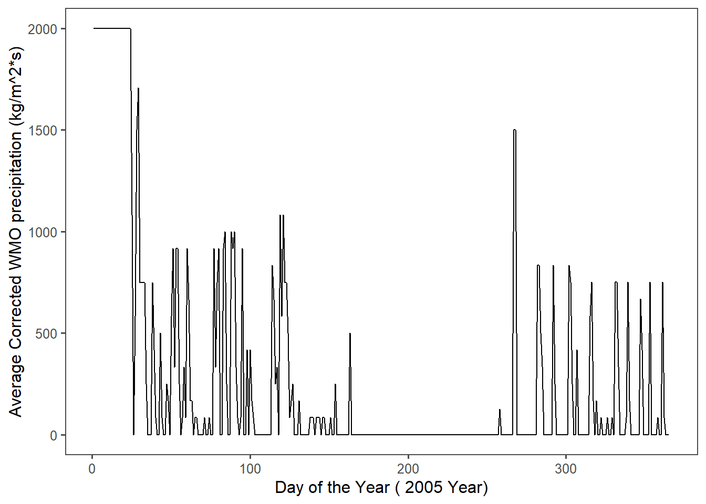
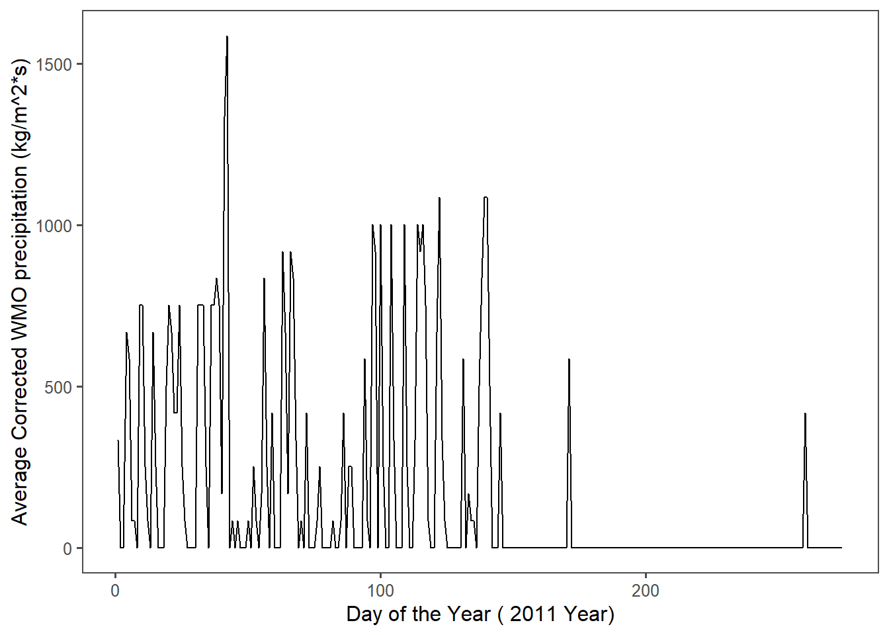
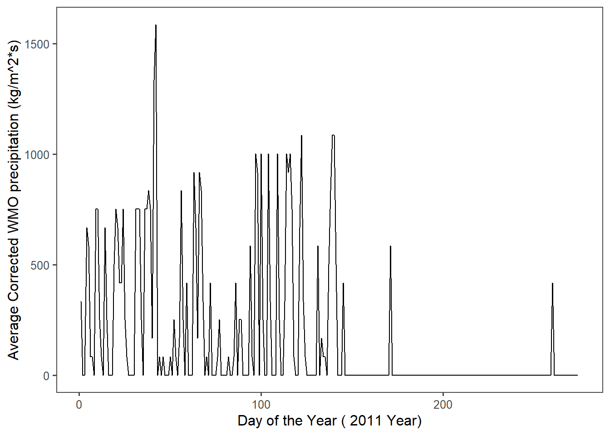

Chapter 3 Iterations (Snow Functions)
Case Study: Snowstudies.org
3.1 Extract the meteorological data URLs.
#Extracting only the weblinks and then the URLs! The `rvest` package is used to to get the URLs for the `SASP forcing` and `SBSP_forcing` meteorological datasets.
site_url <- 'https://snowstudies.org/archived-data/'
#Reading the web url
webpage <- read_html(site_url)
links_forcing <- webpage %>%
html_nodes('a') %>%
.[grepl('forcing',.)] %>%
html_attr('href')3.2 Downloading meteorological data.
#Use of the `download_file` and `str_split_fixed` commands to download the data and save it in data folder
#Grabbing only the name of the file by splitting out on forward slashes
splits_forcing <- str_split_fixed(links_forcing,'/',8)
#Keeping only the 8th column
dataset_forcing <- splits_forcing[,8]
#generating a file list for where the data goes
file_names_forcing <- paste0('data/',dataset_forcing)
for(i in 1:2){
download.file(links_forcing[i],destfile=file_names_forcing[i])
}
downloaded_forcing <- file.exists(file_names_forcing)
evaluate_forcing <- !all(downloaded_forcing)3.3 Writing a custom function to read in data and append a site column to the data.
# headers from metadata pdf file
library(pdftools)
headers_forcing <- pdf_text('https://snowstudies.org/wp-content/uploads/2022/02/Serially-Complete-Metadata-text08.pdf') %>%
readr::read_lines(.) %>%
trimws(.) %>%
str_split_fixed(.,'\\.',2) %>%
.[,2] %>%
.[1:26] %>%
str_trim(side = "left")
#writing the function
forcing_reader <- function(file_names_forcing){
name = str_split_fixed(file_names_forcing,'/',2)[,2] %>%
gsub('_Forcing_Data.txt','',.)
reading = read.delim(file_names_forcing, header = FALSE, sep ="",col.names = headers_forcing,skip = 4) %>%
mutate(site=name)
}3.4 Using the map function to read in both meteorological files.
forcing_data_full <- map_dfr(file_names_forcing,forcing_reader)
#tibble summary
summary(forcing_data_full)## year month day hour minute
## Min. :2003 Min. : 1.000 Min. : 1.00 Min. : 0.00 Min. :0
## 1st Qu.:2005 1st Qu.: 3.000 1st Qu.: 8.00 1st Qu.: 5.75 1st Qu.:0
## Median :2007 Median : 6.000 Median :16.00 Median :11.50 Median :0
## Mean :2007 Mean : 6.472 Mean :15.76 Mean :11.50 Mean :0
## 3rd Qu.:2009 3rd Qu.: 9.000 3rd Qu.:23.00 3rd Qu.:17.25 3rd Qu.:0
## Max. :2011 Max. :12.000 Max. :31.00 Max. :23.00 Max. :0
##
## second precip..kg.m.2.s.1. sw.down..W.m.2. lw.down..W.m.2.
## Min. :0 Min. :0.000e+00 Min. :-9999.000 Min. :-9999.0
## 1st Qu.:0 1st Qu.:0.000e+00 1st Qu.: -3.510 1st Qu.: 173.4
## Median :0 Median :0.000e+00 Median : -0.344 Median : 231.4
## Mean :0 Mean :3.838e-05 Mean :-1351.008 Mean :-1325.7
## 3rd Qu.:0 3rd Qu.:0.000e+00 3rd Qu.: 294.900 3rd Qu.: 272.2
## Max. :0 Max. :6.111e-03 Max. : 1341.000 Max. : 365.8
##
## air.temp..K. windspeed..m.s.1. relative.humidity.... pressure..Pa.
## Min. :242.1 Min. :-9999.000 Min. : 0.011 Min. :63931
## 1st Qu.:265.8 1st Qu.: 0.852 1st Qu.: 37.580 1st Qu.:63931
## Median :272.6 Median : 1.548 Median : 59.910 Median :65397
## Mean :272.6 Mean : -790.054 Mean : 58.891 Mean :65397
## 3rd Qu.:279.7 3rd Qu.: 3.087 3rd Qu.: 81.600 3rd Qu.:66863
## Max. :295.8 Max. : 317.300 Max. :324.800 Max. :66863
##
## specific.humidity..g.g.1. calculated.dewpoint.temperature..K.
## Min. :0.000000 Min. : 0.0
## 1st Qu.:0.001744 1st Qu.: 0.0
## Median :0.002838 Median : 0.0
## Mean :0.003372 Mean : 74.9
## 3rd Qu.:0.004508 3rd Qu.: 0.0
## Max. :0.014780 Max. :2002.0
##
## precip..WMO.corrected..kg.m.2.s.1.
## Min. : 0.0
## 1st Qu.: 0.0
## Median : 0.0
## Mean : 424.7
## 3rd Qu.: 0.0
## Max. :3002.0
##
## air.temp..corrected.with.Kent.et.al...1993...K.
## Min. : 0
## 1st Qu.: 0
## Median : 0
## Mean : 438
## 3rd Qu.: 0
## Max. :5002
##
## air.temp..corrected.with.Anderson.and.Baumgartner..1998..K.
## Min. : 0.0
## 1st Qu.: 0.0
## Median : 0.0
## Mean : 173.9
## 3rd Qu.: 0.0
## Max. :5002.0
##
## air.temp..corrected.with.Nakamura.and.Mahrt..2005...K.
## Min. : 0.0
## 1st Qu.: 0.0
## Median : 0.0
## Mean : 605.9
## 3rd Qu.: 0.0
## Max. :6002.0
##
## air.temp..corrected.with.Huwald.et.al...2009...K. qc.code.precip
## Min. : 0.00 Mode:logical
## 1st Qu.: 0.00 NA's:138336
## Median : 0.00
## Mean : 56.49
## 3rd Qu.: 0.00
## Max. :6009.00
## NA's :5214
## qc.code.sw.down qc.code.lw.down qc.code.air.temp qc.code.wind.speed
## Mode:logical Mode:logical Mode:logical Mode:logical
## NA's:138336 NA's:138336 NA's:138336 NA's:138336
##
##
##
##
##
## qc.code.relhum site
## Mode:logical Length:138336
## NA's:138336 Class :character
## Mode :character
##
##
##
## 3.5 Line plots - mean temp by year by site.
#summarizing mean temperature
forcing_yearly <- forcing_data_full %>%
group_by(year,site) %>%
summarize(yearly_air_temp_k = mean(air.temp..K.,na.rm=T))
#graphing data
ggplot(forcing_yearly,aes(x=year,y=yearly_air_temp_k,color=site)) +
geom_line() +
scale_x_continuous(breaks = c(2003,2004,2005,2006,2007,2008,2009,2010,2011))+
ggthemes::theme_few() +
ggthemes::scale_color_few() +
ylab('Air Temperature (K)')
For both the SASP and SBSP sites, here is a sharp increase in air temperature between the years 2003 and 2005; this is at odds with the stable trendline from 2005 onwards. The following graph filters the years before 2005:
#filtering by year 2005
forcing_yearly_filter <- forcing_yearly %>%
filter(year >= 2005)
#graphing data
ggplot(forcing_yearly_filter,aes(x=year,y=yearly_air_temp_k,color=site)) +
geom_line() +
scale_x_continuous(breaks = c(2005,2006,2007,2008,2009,2010,2011)) +
ggthemes::theme_few() +
ggthemes::scale_color_few() +
ylab('Air Temperature (K)')
3.6 Writing a function for line plots of monthly average temperature at each site for a given year.
Hint: https://ggplot2.tidyverse.org/reference/print.ggplot.html
#summarizing mean temperature
forcing_monthly_air_temperature <- forcing_data_full %>%
group_by(year,month,site) %>%
summarize(monthly_air_temp_k = mean(air.temp..K.,na.rm=T))
#creating function for graphing
temp_plot <- function(filter_year_function,year_air){
filter_year_function <- forcing_monthly_air_temperature %>%
group_by(year,month,site) %>%
filter(year==year_air)
#changing text by year
str1 = 'Month ('
str2 = year_air
str3 = "Year)"
#plotting
x= ggplot(filter_year_function, aes(x=month,y=monthly_air_temp_k,color=site)) +
geom_line() +
scale_x_continuous(breaks = c(1,2,3,4,5,6,7,8,9,10,11,12), label = c("Jan","Feb","Mar","Apr","May","Jun","Jul","Aug","Sept","Oct","Nov","Dec"))+
ggthemes::theme_few() +
ggthemes::scale_color_few() +
ylab('Air Temperature (K)') +
xlab(paste(str1,str2,str3))
print(x)
}3.7 For loop - multi-year plotting
#using function, plotting each year from 2005 to 2010.
for (year_air in 2005:2010) {
temp_plot(filter_year_function,year_air)
}


 

From 2005 to 2010, at no point in the year is the Senator Beck Study Plot warmer than the Snow Angel Study Plot.
3.7.1 Plot of average daily precipitation by day of year
#mutating by day of year
forcing_precip_filter <- forcing_data_full %>%
group_by(year,month,day,site) %>%
filter(site=='SBB_SASP') %>%
unite("date", year, month, day, sep = "-", remove = FALSE) %>%
mutate(date = ymd(date)) %>%
mutate(doy = yday(date)) %>%
summarize(precip= precip..WMO.corrected..kg.m.2.s.1.,
doy=doy)
#summarizing mean values
forcing_precip_filter_avg <- forcing_precip_filter %>%
group_by(doy,site) %>%
summarize(doy_precip = mean(precip))
#graphing
ggplot(forcing_precip_filter_avg, aes(x=doy,y=doy_precip)) +
geom_line() +
ggthemes::theme_few() +
ggthemes::scale_color_few() +
ylab('Average Corrected WMO precipitation (kg/m^2*s)') +
xlab('Day of the Year')
These graphs show the corrected WMO precipitation in kg/m&2*s for each day of the year, averaged over the data range 2003-2011. Both SBB_SASP and SBB_SBSP report from the same gauge.
3.8 Function and For loop – yearly plots of precipitation by day of year.
#creating function
precip_plot <- function(filter_year_function_precip,year_precip){
forcing_precip_function_year<- forcing_data_full %>%
group_by(year,month,day,site) %>%
filter(site=='SBB_SASP',
year==year_precip) %>%
unite("date", year, month, day, sep = "-", remove = FALSE) %>%
mutate(date = ymd(date)) %>%
mutate(doy = yday(date)) %>%
summarize(precip= precip..WMO.corrected..kg.m.2.s.1.,
doy=doy)
forcing_precip_filter_avg_year <- forcing_precip_function_year %>%
group_by(doy,site) %>%
summarize(doy_precip = mean(precip))
#changing text by year
str1 = 'Day of the Year ('
str2 = year_precip
str3 = "Year)"
#plotting
z = ggplot(forcing_precip_filter_avg_year, aes(x=doy,y=doy_precip)) +
geom_line() +
ggthemes::theme_few() +
ggthemes::scale_color_few() +
ylab('Average Corrected WMO precipitation (kg/m^2*s)') +
xlab(paste(str1,str2,str3))
print(z)
}
#excecuting function in for loop
for (year_precip in 2003:2011) {
precip_plot(filter_year_function_precip,year_precip)
} 



 

These graphs show the corrected WMO precipitation in kg/m&2*s for each year in the range 2003-2011 Both SBB_SASP and SBB_SBSP are report from the same gauge.